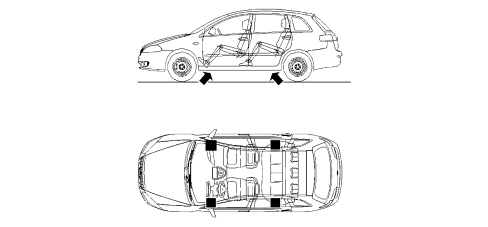

CAR LIFTING POINTS
- Path
- Technical Data > CAR GENERAL FEATURES > CAR LIFTING AND DRAFTING POINTS > CAR LIFTING POINTS
- Kind
- technical data / specifications
- Applies to
- all engines; all production periods
- Interactive page
- https://sloeber94.github.io/elrnDB-fCrm/en/#/194001805
Applies to: all engines; all production periods
To raise the vehicle using lift arms or a workshop lift, arrange the ends of the arms or the lift in the areas shown in the diagram only.
